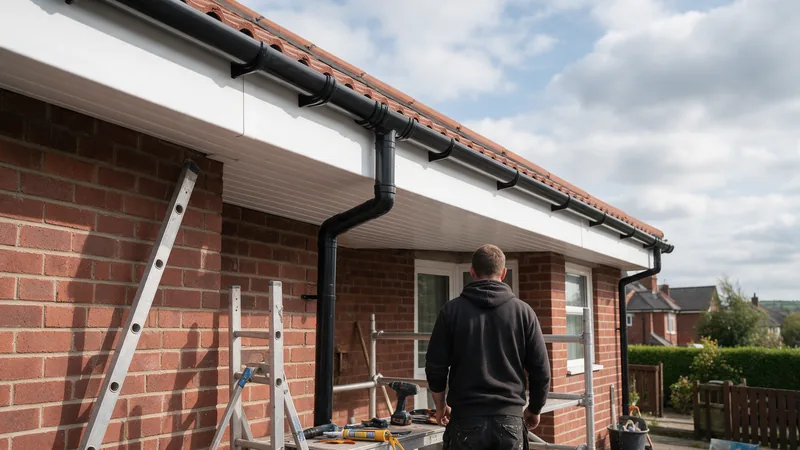
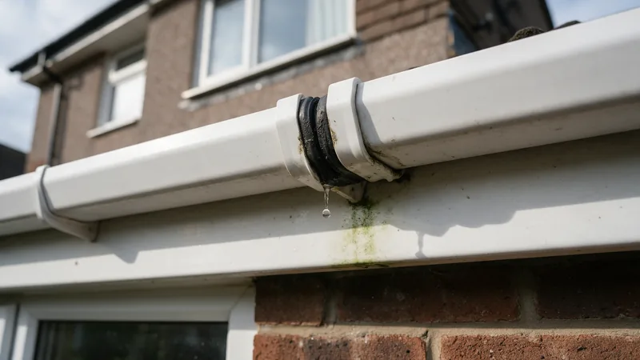
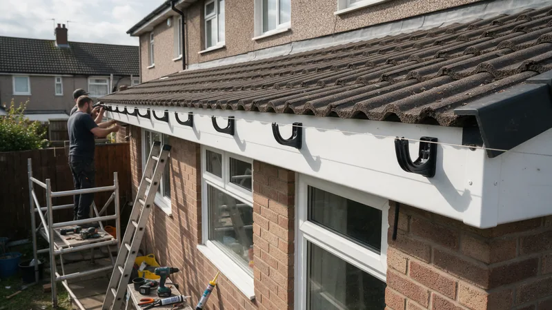
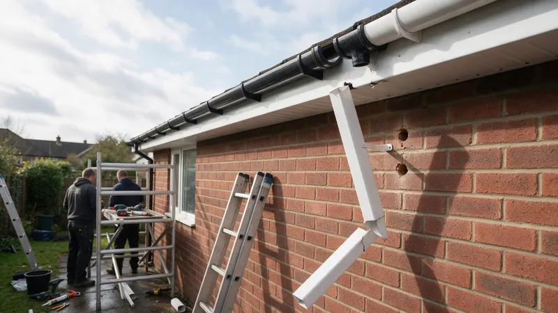

Our work
Twelve sample jobs.
Eavesdale is a demo, so none of these happened. They are the twelve jobs a gutters, fascias and roofline firm round here would actually have on in a month, with pictures generated for this site rather than taken on a job.
 Generated photoNew fascia going on at the eavesClitheroe Sample
Generated photoNew fascia going on at the eavesClitheroe Sample Generated photoThe lot done in one goGreat Harwood Sample
Generated photoThe lot done in one goGreat Harwood Sample
Generated photoBlack gutter on white boardWhalley Sample Generated photoGable faced in shiplapLongridge Sample
Generated photoGable faced in shiplapLongridge Sample Generated photoBargeboard up the vergeRibchester Sample
Generated photoBargeboard up the vergeRibchester Sample Generated photoWhat came out of forty feetWhalley Sample
Generated photoWhat came out of forty feetWhalley Sample Generated photoA stain that shows the jointClitheroe Sample
Generated photoA stain that shows the jointClitheroe Sample
Generated photoThe seal, not the gutterGreat Harwood Sample
Generated photoString line, then bracketsLongridge Sample Generated photoSwan neck and new clipsClitheroe Sample
Generated photoSwan neck and new clipsClitheroe Sample Generated photoA cage in the outletRibchester Sample
Generated photoA cage in the outletRibchester Sample
Generated photoPipe off the wallLongridge SampleFilter them, or tap one for the detail. Every one is a made up sample.
What you are looking at
Why a real firm should show the bucket.
Every roofline firm shows the same photograph: a long run of brand new white board in sunshine, taken from the front lawn. They all look identical, and none of them tells you whether the firm can find out why your gutter is going over.
The pictures worth showing are the ones that prove the diagnosis. What came out of the gutter, laid out on a sheet. The tide mark in a run that has no fall. The stain on the wall under one joint. The rafter feet with the board off. On a real site this page would be your own phone photographs of exactly that, with a line each about what it turned out to be. That is the page that wins the job off the firm who only photographs the finish.
Generated photoGenerated for this demo.
Want somebody to look at yours?
Tell us which side of the house and your postcode and we will come and look up at it.